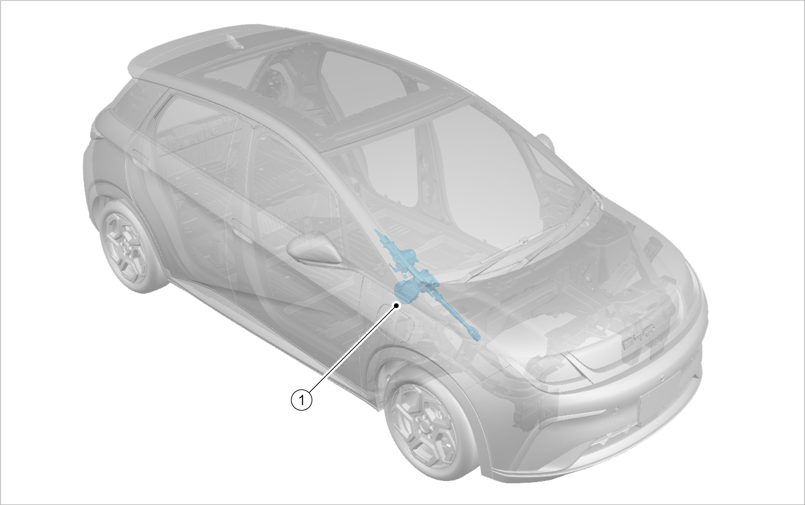

The EPS (Electric Power-assistant Steering) system is a steering system that uses the steering power provided by an EPS motor to assist a driver in performing steering operations. Like other control systems, this system is composed of sensors (torque and angle sensor, vehicle speed sensor), a controller (EPS electronic control unit), an actuator (EPS motor) and relevant mechanical components.
The EPS system, designed based on a mechanical steering system, features the latest electronic technology and high-performance motor control technology. Based on the original vehicle steering system, the EPS is modified and added with the following parts: EPS electronic control unit, torque and angle sensor, EPS motor, etc. The motor-driven transmission mechanism of the system replaces the traditional mechanical hydraulic mechanism, and can provide real-time steering wheel power for the driver in various environments.
The EPS system is powered by the EPS motor, and the power level is adjusted and controlled in real time by the EPS electronic control unit. The system provides different power according to different vehicle speeds, to improve the steering performance of vehicle, reduce the control force during parking and low-speed driving, and improve the stability of steering control during high-speed driving, thus improving the active safety of vehicle.
Main system components
Torque and angle sensor
Vehicle speed sensor
EPS electronic control unit
EPS motor
Related mechanical structure
Main system components
Power-assistant control function
The EPS system provides speed-sensitive power assistance. This means that with the same steering wheel torque input, the target motor current changes with the vehicle speed, so as to better meet easy steering and road feel requirements. Its power assistance is also segmented: The EPS motor applies power-assistant torque according to the steering wheel deviation direction, which ensures easy steering at low speed and stable operation at high speed for good road feel.
Return-to-center (RTC) control function
During steering, the steering wheel can automatically return to center by virtue of its king pin caster angle and king pin inclination angle. Based on the mechanical steering mechanism, an EPS motor and speed reduction mechanism are added for the EPS system. The EPS system performs steering RTC control of the EPS motor through the EPS electronic control unit, and together with the aligning torque produced by front wheel alignment, implements the steering RTC action. This allows the steering wheel to quickly return to center, inhibits its vibration, maintains good road feel, increases steering sensitivity and stability, optimizes the steering RTC performance and shortens the convergence time. The RTC control is implemented by adjusting the RTC compensation current, which produces a RTC torque to cause the steering wheel to return to center along a direction.
Damping control function
When the vehicle runs at a high speed, damping control is completed by controlling the damping compensation current to enhance the road feel and improve the steering stability under high-speed running.
System working principle
When the vehicle makes a turn, the torque and angle sensor detects the size and direction of the torque and angle, and processes and passes the size and direction signals to the EPS electronic control unit. The EPS electronic control unit receives vehicle speed signals detected by the vehicle speed sensor at the same time, and determines the motor rotation direction and power-assistant torque based on signals of the vehicle speed sensor and the torque and angle sensor. At the same time, the current sensor detects the current of the circuit and monitors the drive circuit which finally drives the motor to work for power-assistant steering.

|
S/N |
Name |
|---|---|
|
1 |
EPS column & universal joint assembly |